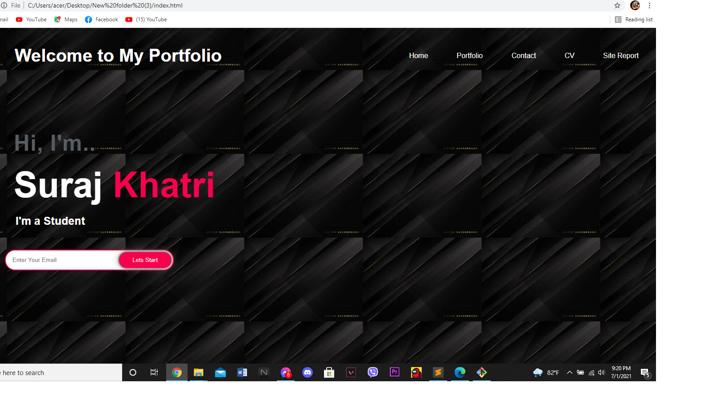
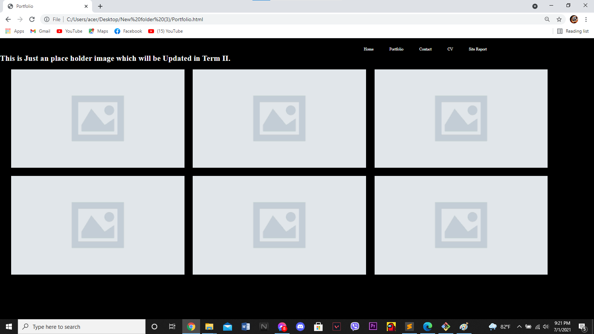
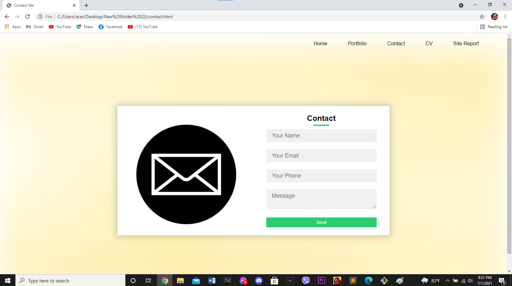
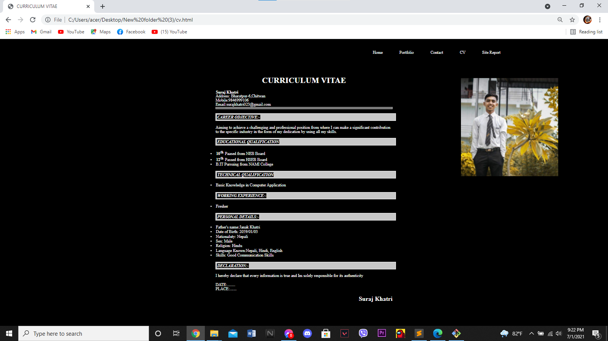
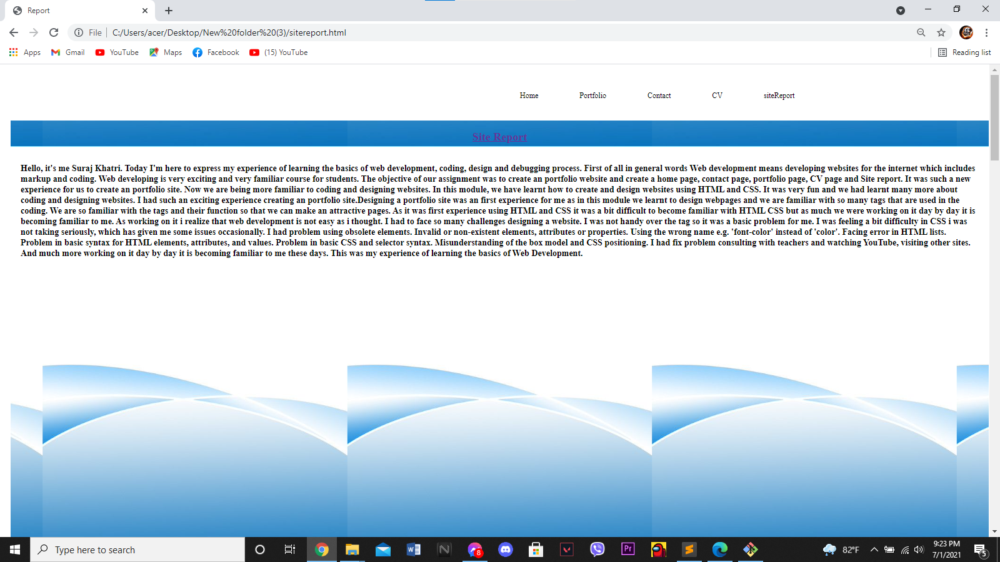
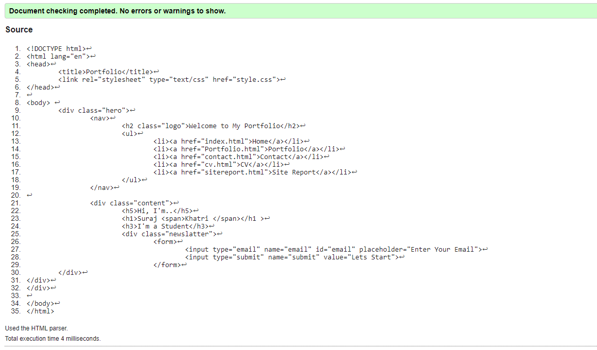
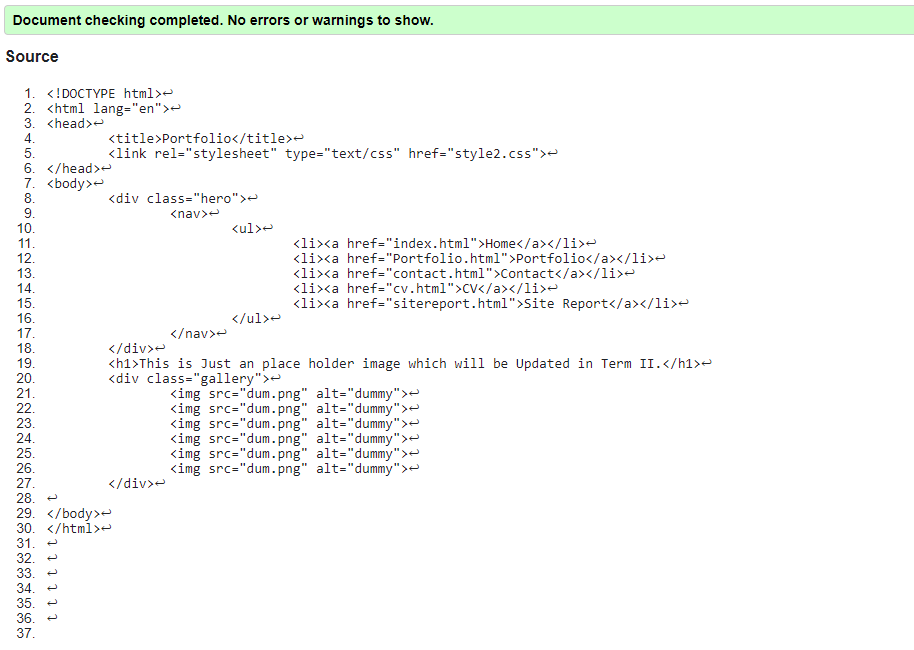
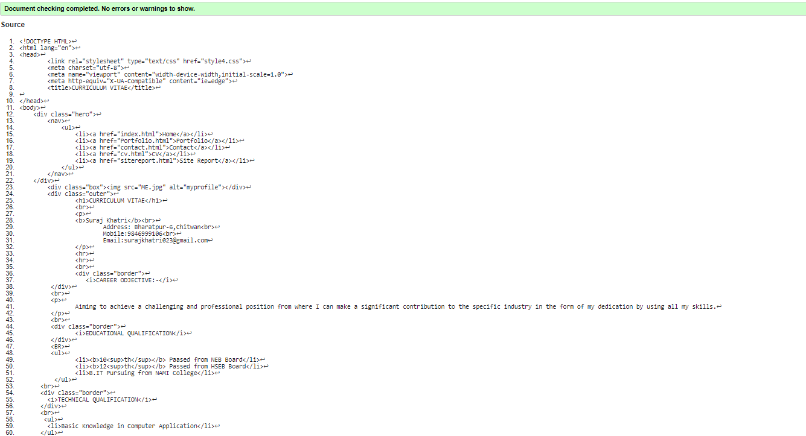
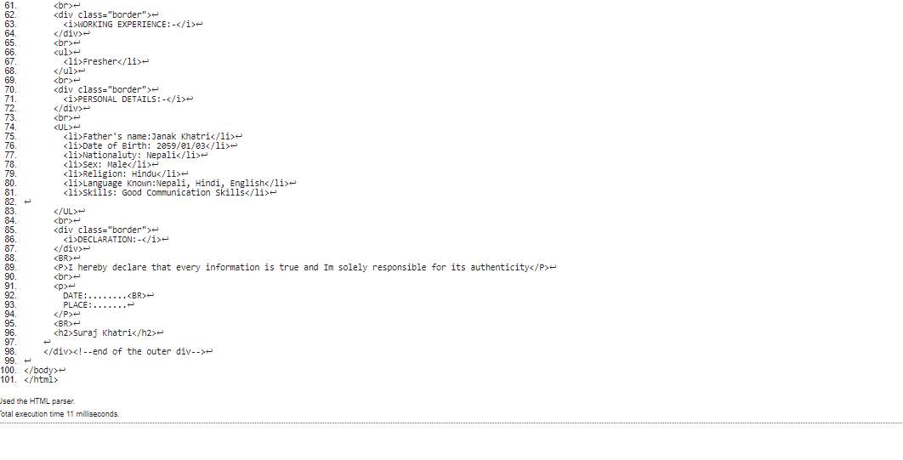
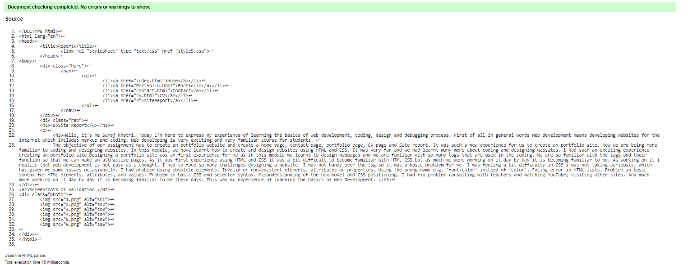

Site Report
Hello, it's me Suraj Khatri. Today I'm here to express my experience of learning the basics of web development, coding, design and debugging process. First of all in general words Web development means developing websites for the internet which includes markup and coding. Web developing is very exciting and very familiar course for students.
The objective of our assignment was to create an portfolio website and create a home page, contact page, portfolio page, CV page and Site report. It was such a new experience for us to create an portfolio site. Now we are being more familiar to coding and designing websites. In this module, we have learnt how to create and design websites using HTML and CSS. It was very fun and we had learnt many more about coding and designing websites. I had such an exciting experience creating an portfolio site.Designing a portfolio site was an first experience for me as in this module we learnt to design webpages and we are familiar with so many tags that are used in the coding. We are so familiar with the tags and their function so that we can make an attractive pages. As it was first experience using HTML and CSS it was a bit difficult to become familiar with HTML CSS but as much we were working on it day by day it is becoming familiar to me. As working on it i realize that web development is not easy as i thought. I had to face so many challenges designing a website. I was not handy over the tag so it was a basic problem for me. I was feeling a bit difficulty in CSS i was not taking seriously, which has given me some issues occasionally. I had problem using obsolete elements. Invalid or non-existent elements, attributes or properties. Using the wrong name e.g. 'font-color' instead of 'color'. Facing error in HTML lists. Problem in basic syntax for HTML elements, attributes, and values. Problem in basic CSS and selector syntax. Misunderstanding of the box model and CSS positioning. I had fix problem consulting with teachers and watching YouTube, visiting other sites. And much more working on it day by day it is becoming familiar to me these days. This was my experience of learning the basics of Web Development.
Images of Progress





Screenshots of Validation




